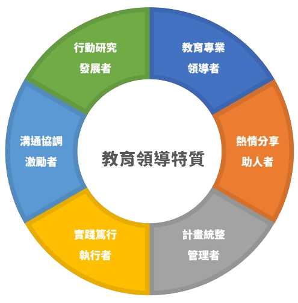

-
電話： 信箱：hcm9766@gmail.com
-
校長 洪中明
學歷
- 高雄市勝利國小
- 高雄市大義國中
- 高雄市左營高中
- 國立臺北師範學院 初等教育學系
- 國立臺北教育大學 課程與教學研究所碩士
- 國立臺北教育大學 教育政策與管理研究所博士
經歷
- 新北市新泰國民小學校長
- 南投縣信義鄉新鄉國小導師
- 南投縣信義鄉新鄉國小教務組長、訓導組長
- 新北市板橋區江翠國小學年主任、事務組長
- 新北市汐止區白雲國小學務（輔導）主任
- 新北市汐止區白雲國小教務主任
- 新北市汐止區白雲國小總務主任
- 新北市教育局新住民輔導團團員
- 新北市教育局友善輔導團團員
- 新北市教育局童軍教育推展輔導團團員 中華民國童軍總會國家研習營助理訓練員
- 新北市第13期國中小校長班班長
- 國家教育研究院第130期國小校長班副主席
-
自傳
個人生長在陽光普照的高雄，自小參加童軍，童軍的銘言就是隨時隨地幫助他人，所以不自覺的，我只要看見需要幫助的人，我都會主動幫助，例如弱勢學生校外教學、或是各項扶助弱勢的捐款。
其次，我的個性不藏私，所以常常會將所學分享給大家，例如我會在學校組織讀書會，成立學習社群，分享我的知識。
最後，個人具有好奇心和創意，人稱好奇寶寶。因此在求學階段，常是師長的頭痛人物，但也由於師長的包容和鼓勵，讓我能有「良師興國」的機會。
個人自國立台北師範學院畢業之後，分別服務過不同類型的學校：偏遠（南投縣信義鄉新鄉國小6年半）、中小型（汐止區白雲國小7年）和中大型（新莊區新泰國小8年） （板橋區江翠國小6年半）的學校，由於服務學校的校長及主任的看重和栽培，個人經歷二、三、四、五、六年級導師，同時也擔任學年主任，領域召集人。在行政工作上，組長階段擔任過教務組長、訓導組長、事務組長及人事人員；在主任階段擔任過學務主任（含輔導）、教務主任及總務主任。於101年開始擔任新泰國民小學校長八年。109年八月奉派新莊區光華國民小學擔任校長。
在服務過程中，感受到專家權和參照權的重要性，同時也是自己對求知的自我實現，因此先在國立台北教育大學課程與教學研究所碩士班進修，畢業後在教育政策與管理研究所博士班進修，並取得博士資格。
個人除了在學校校務的推動及學識的求知上努力不懈外，在校外參與的活動上，童軍方面則擔任中華民國童軍總會國家研習營助理訓練員，協助童軍運動的推展。目前也擔任新北市國立台北教育大學第八屆校友會理事長。協助校友會業務之推動。
另外也曾經擔任本市教育局新住民輔導團團員，家庭教育輔導團團員。現任為新北市友善校園輔導團團員，童軍教育推展輔導團組長，負責新北市教育的推廣和宣導、同時也協助本市教育局進行各項專案研究（如臺北縣教師專業發展評鑑後設評鑑研究、新住民政策評估研究、新住民補救教學成效研究、新北市雙語實驗學校設置評估等）。
-

教育理念
俗云：「有怎樣的校長，就有怎樣的學校」，而所謂教育理念係指個人在教育上的價值表現，今日個人能有這樣的成就，首要歸功於父母及師長的提攜和教導，「因為教育改變了我的生命，所以今日我也要用教育成就孩子的大未來」，基於此，個人的教育理念就是「成就每位孩子」，「培養未來的領袖人才」。
所謂「成就每位孩子」、「培養未來的領袖人才」，就是建立在「適時」「適性」「適量」的教育基礎上，藉由「有教無類」、「因材施教」、「多元發展」、「正義論」及「正向心理學」的理念，讓每個學生都能「使其優勢智慧發揮到淋漓盡致，轉化劣勢為優勢」，也是所謂的「天生我才必有用」及「行行出狀元」
最後，教育需要更多的合夥人，因此個人會爭取社會資源，提供支持網，促成無障礙的學習環境，使師生都能在優質的學習環境中，達到個人的教育理念「成就每位孩子」、「培養未來的領袖人才」。